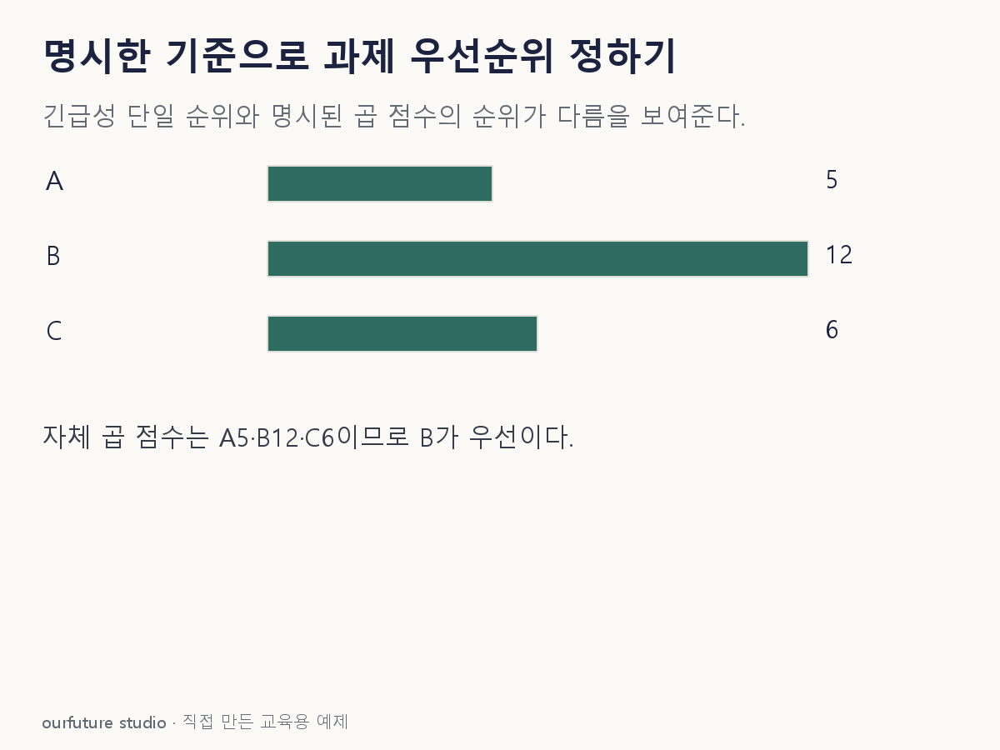

조건을 바꾸며 확인하기
긴급성×실행 가능성은 자체 교육 규칙이다. 공식 우선순위 공식이나 법적 착수 판정이 아니다.
기본 예제와 비교하기
아래 그림과 표는 글의 기본 조건입니다. 입력을 바꾼 결과는 계산 칸에서 확인하세요.

같은 문제를 직접 골라 보기
큰 점수를 우선한다. 점수=긴급성×실행 가능성. A=(5,1), B=(3,4), C=(2,3).
조건을 더 바꾸면?
B의 실행 가능성만 4에서 1로 바뀌면 1순위는?
변형 풀이 확인
C다. A=5, B=3, C=6이다.
한 조건 변경으로 결합 점수의 순서가 달라졌다. 원래의 B를 그대로 정답으로 외우면 안 된다.
점수의 뜻·결합 규칙·우선 방향을 확인한다.